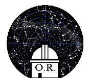
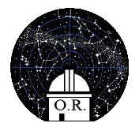
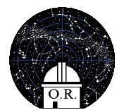
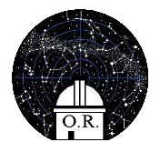

Prochaine séance publique le :
-samedi 5 février 2022 à 21h 30
-uniquement sur réservation par mail
-Passe sanitaire obligatoire
-Masque obligatoire à l'intérieur du local
-Entrée: 5 euros en individuel
-10 euros par famille (quel que soit le nombre de personnes).
Il n'y a plus de places disponibles pour la séance du samedi 5 février 2022, ni pour celles des samedis 5 mars et 2 avril.
La prochaine séance avec des places disponibles aura lieu le samedi 7 mai à 21h 30.
Merci de bien vouloir effectuer vos demandes de rendez-vous, et de réceptions de classes ou de groupes uniquement par mail:
observatoire.populaire.rouen@orange.fr